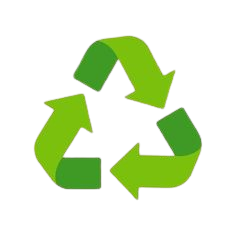
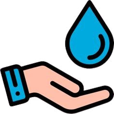
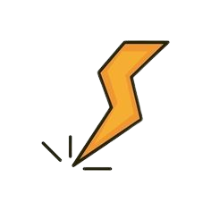
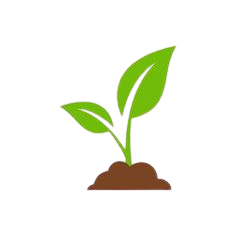
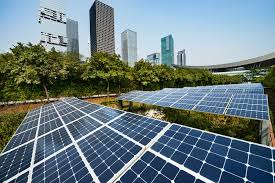
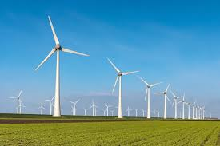
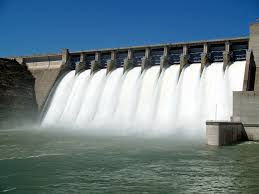

A sustentabilidade é essencial para garantir um futuro melhor para todos. Pequenas atitudes podem reduzir o impacto ambiental e preservar os recursos naturais.
Aprenda práticas como reciclagem, economia de energia, consumo consciente e preservação da biodiversidade.
Junte-se a nós nesta jornada por um planeta mais verde e saudável!

Separe corretamente o lixo reciclável: papel, vidro, metais e plásticos. Ajuda a reduzir a poluição e economizar recursos.

Feche a torneira ao escovar os dentes e reutilize água da chuva para regar plantas. Cada gota conta!

Desligue aparelhos quando não estiverem em uso e opte por lâmpadas LED, que são mais eficientes.

Plantar árvores contribui para a purificação do ar e combate as mudanças climáticas.
Conheça lugares que promovem a preservação ambiental.

Energia solar é a energia obtida a partir da luz e do calor do sol. É considerada uma fonte de energia renovável, limpa e sustentável, pois não emite poluentes durante sua geração. Pode ser convertida em eletricidade por meio de painéis fotovoltaicos ou utilizada para aquecimento de água e ambientes com sistemas térmicos. É uma alternativa importante para reduzir a dependência de combustíveis fósseis e mitigar os impactos ambientais.

Energia eólica é a energia gerada a partir da força dos ventos. Ela é captada por aerogeradores (ou turbinas eólicas), que transformam a energia cinética do vento em energia elétrica. Assim como a energia solar, é uma fonte renovável, limpa e sustentável, pois não emite gases poluentes e não esgota os recursos naturais. É amplamente utilizada em regiões com ventos constantes e intensos, contribuindo para a diversificação da matriz energética e a redução dos impactos ambientais.

Energia hidrelétrica é a eletricidade gerada a partir da força da água em movimento, geralmente em rios ou reservatórios. O processo ocorre em usinas hidrelétricas, onde a água passa por turbinas, fazendo-as girar e acionando geradores que produzem energia elétrica. É uma das fontes de energia renováveis mais utilizadas no mundo, especialmente em países com grandes recursos hídricos. Embora seja considerada limpa por não emitir poluentes durante a geração, pode causar impactos ambientais significativos, como alterações nos ecossistemas aquáticos e deslocamento de comunidades.
Vida Sustentável
Este site é um projeto educativo intitulado "Vida Sustentável", que visa conscientizar os visitantes sobre práticas e hábitos que ajudam a proteger o meio ambiente.